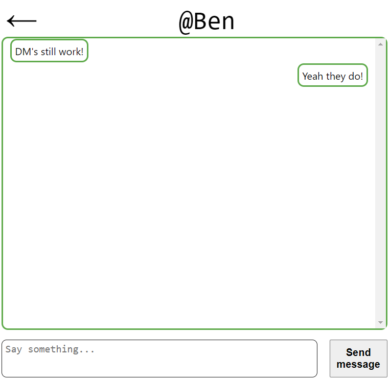

StemSpace Social Media Website
StemSpace was a course project for Purdue's CS307 Full-Stack SWE course. The idea was to
create a place for STEM students to talk about their areas of study and meet people from
within their discipline and beyond.
The Timeline was inspired by Reddit, and split posts into different Topics. Users could see
posts tagged with that topic or posts that were made by users they followed. In general, we sought
to combine the best features of Reddit and Discord, which are commonly used by STEM students.
While many of the features implemented in Spring 2022 are now broken due to extensive React.js and Node.js
updates. Listed at the bottom are some examples of our functionality.
Overall, this project was good practice in creating a full-stack project that we could use synchronously.
While the UI is not our best work, the project was well-planned and documented according to the Scrum framework.
